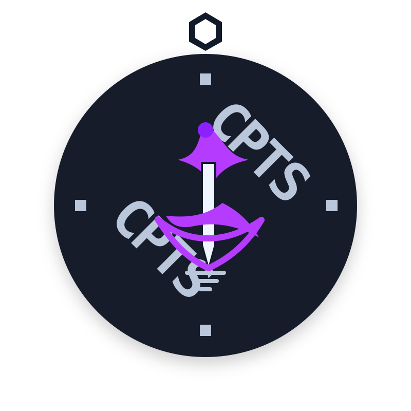

Reconhecimento e enumeração
Mapeamento de serviços, tecnologias, portas, rotas e pistas técnicas antes de qualquer validação.
Red Team · Pentest · Segurança Ofensiva
Portfólio focado em cibersegurança ofensiva, com estudo prático em Red Team, pentest, enumeração, exploração controlada, documentação técnica e desenvolvimento seguro.

$ scope --define
$ recon --enumerate
$ validate --evidence
$ report --clarity
Perfil ofensivo
Atuo com mentalidade de análise ofensiva ética: entender superfície de ataque, validar riscos em ambientes autorizados e transformar achados em recomendações úteis.
Mapeamento de serviços, tecnologias, portas, rotas e pistas técnicas antes de qualquer validação.
Leitura de fluxos, autenticação, autorização, entradas, exposição de dados e riscos comuns de aplicação.
Base prática em terminal, TCP/IP, ambientes Linux, versionamento, automação e análise de comportamento.
Registro de evidências, impacto, reprodução segura, severidade e recomendações que ajudam o time a corrigir.
Experiência
Minha base profissional vem de sistemas reais, suporte técnico, integrações e melhoria de processos, agora direcionada para segurança ofensiva e desenvolvimento mais seguro.
Apoio no desenvolvimento e manutenção de sistemas internos, automações, integração de plataformas, suporte técnico e melhoria de portais e dashboards institucionais.
Desenvolvimento, manutenção e otimização de sistemas, levantamento de requisitos, integrações entre plataformas, testes, validações, documentação e treinamento de equipes.
Projetos
Projetos do GitHub organizados para mostrar raciocínio, automação, desenvolvimento e base para segurança ofensiva.
Carregando repositórios públicos...
Conhecimento
Leitura de superfície, portas, serviços, tecnologias e rotas de validação.
OWASP Top 10, autenticação, autorização, inputs, APIs e análise de fluxo.
Ambiente Linux, shell, permissões, processos, arquivos e rotina de laboratório.
Fundamentos de rede, serviços, protocolos, diagnóstico e interpretação de tráfego.
Estudo de caminhos de elevação em Linux e Windows dentro de labs autorizados.
Automação, scripts, APIs, integrações, aplicações web e base de desenvolvimento.
Versionamento, organização de repositórios, histórico técnico e documentação clara.
Bancos relacionais e não relacionais, leitura de dados e apoio à investigação técnica.
Dashboards, indicadores, leitura de cenário e comunicação visual de dados.
Badges e evolução
Acompanhe minha evolução em labs, módulos e fundamentos que sustentam uma rotina séria de pentest.

Certificação em progresso, com estudo voltado para metodologia de pentest, enumeração, exploração controlada, pivoting, Active Directory e relatório profissional.
Valor configurado manualmente. Pode ser integrado depois com um endpoint seguro usando Student ID e token da HTB Academy.
Estudo guiado por módulos, checkpoints, labs e trilha de Penetration Tester.
Prática em ambientes controlados para reforçar enumeração, validação e documentação.
Base de desenvolvimento, análise de sistemas, bancos de dados e engenharia de software.